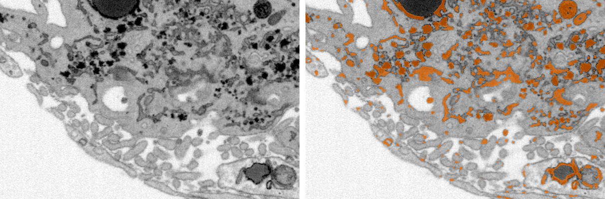

Use your own model
This page describes how to run a model that you trained yourself in cellmap-flow. Start from the section that matches your model:
A PyTorch network with a weights file. There are two ways:
Write one short Python script. This is the quickest way to see the model. Follow Quick start.
Export it once with cellmap-models. The export then runs without a script, records its own normalization, and can be shared on Hugging Face. See Export a model with cellmap-models.
An ONNX or TorchScript file, or a model from DaCapo, Cellpose, fly_organelles, mia-train or the BioImage Model Zoo: no script is needed. Go to Models that need no script.
A model in another framework, such as TensorFlow: see Models that are not PyTorch.
If the model needs Python packages that cellmap-flow does not install, also read Models that need their own packages.
Quick start
1. Write a script. A script builds the network and states what it reads
and writes. The one below is a complete demo model that needs no weights: it
marks voxels that are clearly darker than their surroundings. Save it as
my_model.py (it is also in the repository, as
example/minimal_model.py):
import torch
import torch.nn.functional as F
# What the network reads and writes.
input_voxel_size = (8, 8, 8) # nm, in z, y, x order
output_voxel_size = (8, 8, 8)
input_size = (64, 64, 64) # voxels in
output_size = (40, 40, 40) # voxels out
output_channels = 1
channels = ["dark"] # optional channel names
class DarkStructures(torch.nn.Module):
"""Whether each voxel is clearly darker than the 25-voxel cube around it, as a probability."""
def forward(self, x):
nearby = F.avg_pool3d(x, 5, stride=1)[..., 10:-10, 10:-10, 10:-10]
surroundings = F.avg_pool3d(x, 25, stride=1)
darker = (surroundings - nearby) / (surroundings.abs() + 1e-6)
return torch.sigmoid(30 * (darker - 0.1))
# The network. Replace this with your own network and weights.
model = DarkStructures()
device = torch.device("cuda" if torch.cuda.is_available() else "cpu")
model.to(device).eval()
2. Test it. This runs the model on one block of the data, on the current
machine, and prints Server check passed. The data here is a public
mouse-liver volume; any zarr, N5 or precomputed path or URL works:
DATA=https://janelia-cosem-datasets.s3.amazonaws.com/jrc_mus-liver/jrc_mus-liver.zarr/recon-1/em/fibsem-uint8
cellmap_flow infer script -s my_model.py -d $DATA --server-check
3. Run it. This starts the model and opens the viewer and dashboard:
cellmap_flow infer script -s my_model.py -d $DATA -q gpu_h100 -P your_charge_group
On a machine without a cluster, such as a Mac, omit -q and -P. In a
dashboard that is already open, enter the script’s path in Add a model
on the Models tab instead, and click Resolve, then Run.
The prediction appears as a layer over the data. The demo model on the mouse-liver volume (left: the data; right: its prediction in orange):

Your own model
In the script, change the six values at the top and replace the network, keeping the last two lines:
from my_package import MyNetwork # must be an installed package
model = MyNetwork()
model.load_state_dict(torch.load("/path/to/weights.pt", map_location="cpu", weights_only=True))
Then check the following:
Sizes. cellmap-flow calls
modelwith one block at a time: a float32 tensor of shape(1, 1, *input_size). The model must return(1, output_channels, *output_size). The two sizes may be equal.Output activation. If the network outputs logits, add a sigmoid in the script:
model = torch.nn.Sequential(MyNetwork(), torch.nn.Sigmoid()).Packages. If the network needs packages that cellmap-flow does not install, see Models that need their own packages.
Input normalization. This is not part of the script. Once the model is running, select the scaling that the network was trained with (for example, to [0, 1] or [-1, 1]) on the dashboard’s Processing tab.
A model that runs from a script can also be finetuned in cellmap-flow. For every script variable, voxel sizes that are not whole numbers, and networks with several input channels, see Custom Model.
Models that need no script
Models in these formats run directly. Enter the value in Add a model, or
pass it to cellmap_flow add. If the model file does not contain a value
that is needed, such as the voxel size, Add a model asks for it.
Model |
What to enter |
|---|---|
cellmap-models export (Export a model with cellmap-models) |
its folder, or its Hugging Face repo, |
TorchScript file |
|
ONNX file (ONNX exports and models finetuned in the browser) |
|
fly_organelles checkpoint |
|
DaCapo run |
|
mia-train model (HuggingFace Models) |
its Hugging Face repo, |
Cellpose weights |
|
BioImage Model Zoo package (BioImage Model Zoo) |
the folder or zip that holds its |
A file of PyTorch weights alone is not accepted, because it does not define the network: use a script. For the complete list of accepted paths and names, see An entry from what you have.
Models that need their own packages
By default a model runs in the cellmap-flow environment. The built-in types that need something else (Cellpose, fly_organelles, the BioImage Model Zoo, ONNX, mia-train) each run in an environment of their own, which cellmap-flow installs when it is first needed. Nothing has to be set for them.
A script whose network needs other packages runs in an environment that you provide:
Create a conda environment or virtualenv that contains your packages.
Install cellmap-flow into it:
pip install cellmap-flow.Pass the environment’s path when starting the model, on the command line:
cellmap_flow infer script -s my_model.py -d $DATA --env /path/to/my_env
or in a YAML configuration:
models: my_model: type: script script_path: /path/to/my_model.py env: /path/to/my_env
Only the model runs in that environment; the dashboard keeps running in its own. Add a model has no field for an environment, so start such a model from the command line or from a YAML. For details, see Running a model in its own environment.
Export a model with cellmap-models
An export is the alternative to a script for a PyTorch network. It is a
folder that contains the network and a metadata.json file. Compared with
a script:
it runs without your code, so it can be shared;
its metadata records the input normalization and output activation, which the dashboard then applies for you;
it needs no script: its folder or Hugging Face repo is entered directly in Add a model.
Like a script model, it can be finetuned. Create an export with cellmap-models:
import cellmap_models.model_export.config as c
from cellmap_models.model_export import ModelMetadata, export_metadata, export_torch_model
c.EXPORT_FOLDER = "/path/to/exports"
model = ... # your torch.nn.Module, weights loaded
model.eval()
metadata = ModelMetadata(
model_name="my_model",
model_type="UNet",
framework="torch",
spatial_dims=3,
in_channels=1,
out_channels=2,
channels_names=["mito", "er"],
iteration=100000,
input_shape=[178, 178, 178],
output_shape=[56, 56, 56],
inference_input_shape=[178, 178, 178],
inference_output_shape=[56, 56, 56],
input_voxel_size=[8, 8, 8],
output_voxel_size=[8, 8, 8],
input_normalization={"method": "min_max", "min": -1.0, "max": 1.0},
inference_output_activation={"name": "sigmoid", "apply_after_model": True},
author="Your Name",
description="Mitochondria and ER, trained on ...",
)
# Writes /path/to/exports/my_model/metadata.json (EXPORT_FOLDER/model_name).
export_metadata(metadata, overwrite=True)
# Writes the network into the same folder.
export_torch_model(model, (1, 1, 178, 178, 178), "/path/to/exports/my_model")
To run the export, enter the folder’s path in Add a model, or add it to a YAML configuration:
models:
my_model:
type: cellmap
folder_path: /path/to/exports/my_model
To share the export, upload the folder to a Hugging Face model repository.
Log in first, with hf auth login (huggingface-cli login in older
versions of huggingface_hub):
from cellmap_models.model_export import push_to_huggingface
push_to_huggingface(folder_path="/path/to/exports/my_model", repo_id="<you>/my-model")
Other users can then run the model by entering <you>/my-model in Add
a model (HuggingFace Models).
Note
An export runs only at the input size that it was exported with (178 voxels per side in this example), so export at the size that the model should run at.
Models that are not PyTorch
Convert the model to ONNX and enter the
.onnxfile’s path and input voxel size in Add a model (ONNX exports and models finetuned in the browser).Or write a script with its own prediction function. Instead of
model, the script definesprocess_chunk, which can use any library.example/tensorflow_lsd.pyis a TensorFlow example (Custom Model).
These models cannot be finetuned on the cluster, which trains PyTorch networks only.
In the browser app
The browser app runs ONNX models on the user’s own GPU, with nothing installed. A model that was finetuned in cellmap-flow is made available there with Publish to Hugging Face on the Finetune tab (docs/finetuning.md). For adding other ONNX models, see In the browser.
Troubleshooting
The model fails to start. Run the test command from step 2, which prints the error in the terminal. “Shape validation failed” means that
output_sizeoroutput_channelsdoes not match what the network returns.The job fails on the cluster. Open Job Logs in the dashboard. An import error means that a package is missing from the environment that the model runs in (Running a model in its own environment).
The prediction is blank, constant or noisy. Check the input normalization on the Processing tab, the sigmoid, and that the voxel sizes are in z, y, x order.
The data has a different voxel size from the model. No action is needed: by default the data is resampled (Data at Another Voxel Size).